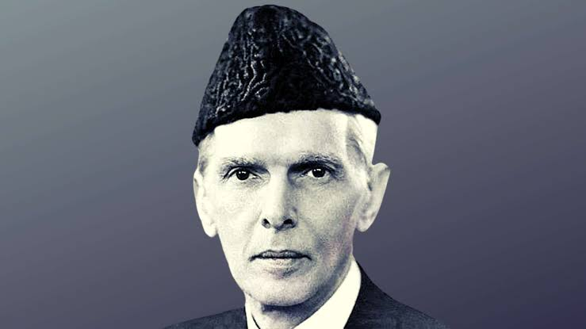

The man who surved his life for the people of sub-continent.

Muhammad Ali Jinnah was a lawyer, politician, and the founder of Pakistan.
Here's a time line of Quaid-e-Azam life:
1876- Born in Karachi, Pakistan.
1893- Jinnah Family moved to Bombay(Mumbai).
1895- At the age 19, he became the youngest Indian to be called to the bar in England.
1896- At the age 20,Jinnah began his practice in Bombay, the only Muslim barrister in the city.
1900- He become the Bombay presidency magistrate & got an interim position.
1906- Join the Indian National Congress political party.
1907- As a lawyer, Jinnah gained fame for his skilled handling of the 1907 "Caucus Case".
1909- Although Jinnah initially opposed separate electorates for Muslims, he used this means to gain his first elective office in 1909
1911- In 1911 introduced the Wakf Validation Act to place Muslim religious trusts on a sound legal footing under British Indian law.
1912- In December 1912, Jinnah addressed the annual meeting of the Muslim League although he was not yet a member.
1913- In April 1913, he again went to Britain, with Gokhale, to meet with officials on behalf of the Congress.
1913- Join the All-India Muslim League political party.
1916- He became the President of Muslim League.
1920- Left the Indian National Congress
1934- Muslims of Bombay elected Jinnah, though then absent in London, as their representative to the Central Legislative Assembly in October 1934.
1937- Events which separated the communities included the failed attempt to form a coalition government including the Congress and the League in the United Provinces following the 1937 election.
1944- In September 1944, Jinnah and Gandhi, who had by then been released from his palatial prison, met formally at the Muslim leader's home on Malabar Hill in Bombay.
1946- In the provincial elections in January 1946, the Muslim League took 75% of the Muslim vote.
1947- On 4 July 1947, Liaquat asked Mountbatten on Jinnah's behalf to recommend to the British king, George VI, that Jinnah be appointed Pakistan's first governor-general.
1947- On 22 August 1947, just after a week of becoming governor general, Jinnah dissolved the elected government.
1948- In January 1948, the Indian government finally agreed to pay Pakistan its share of British India's assets.
1948- On 6 July 1948, Jinnah returned to Quetta, but at the advice of doctors, soon journeyed to an even higher retreat at Ziarat.
1948- Jinnah died later that night at 10:20 pm at his home in Karachi on 11 September 1948 at the age of 71, just over a year after Pakistan's creation and buried in Karachi.
Think 100 times before you take a decision, But once that decision is taken, stand by it as one man.
If you have time, you should read more about this incredible human being on his Wikipedia entry.